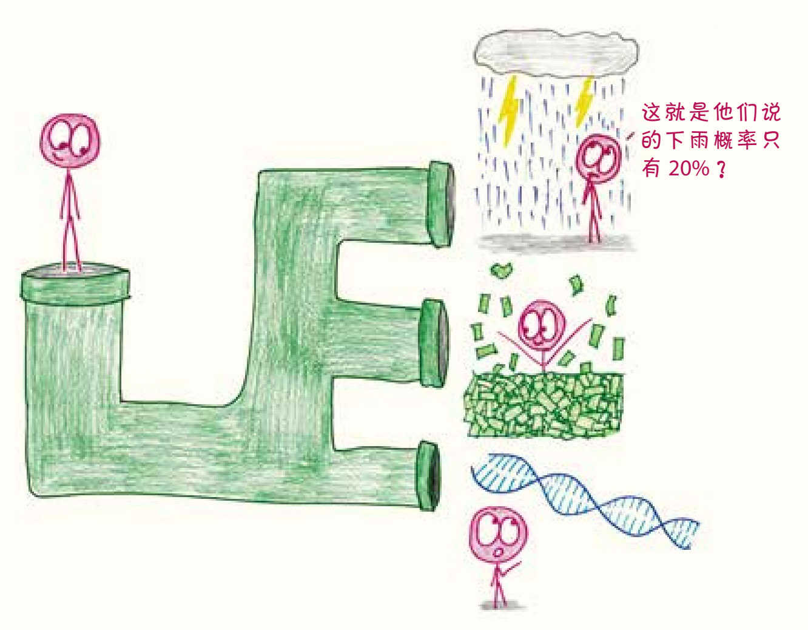
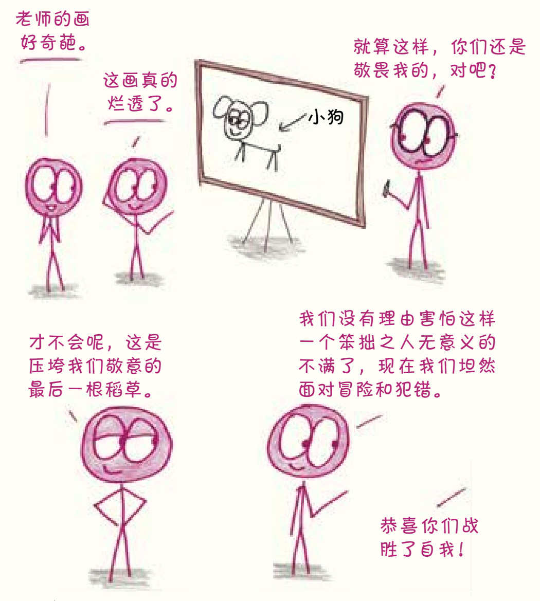

这是一本关于数学的书。至少在动笔之前，我真是这么想的。
但在写的过程中，我感觉自己像在地下隧道中穿行，因为失去了信号和导航，全书的故事线就没能完全遵照原本的计划展开，这反倒让我发现了一些意外的风景。走出隧道，重见天日以后，我发现这本书里除了数学，还聊了许多其他的问题：为什么人们要买彩票？一位儿童图书作家是如何改变瑞典选举的？“哥特式”小说又是怎样定义的？电影《星球大战》（Star Wars）中，对于达斯·维德（Darth Vader）和他的银河帝国来说，建造一个巨型的球形空间站真的是明智之举吗？
这就是数学。它连接着生活中看似风马牛不相及的事物，就像超级马里奥四通八达的秘密管道。
如果你觉得数学不可能这么神奇，那也许是因为你在一个叫“学校”的地方学过数学了。如果是这样，我觉得这挺悲哀的。

2009年，我大学毕业，我想我知道为什么数学不受欢迎了：大多数学校都把这门课教得糟透了。数学是一门瑰丽的、充满想象力和逻辑的艺术。而学校里的数学课把这门艺术撕成一大碗碎纸屑，然后给学生布置了一项几乎不可能完成又乏味十足的任务——把这碗碎纸屑拼回去。既然教学方式如此，那就怪不得学生在数学面前一边哀号，一边屡战屡败，也怪不得成年人在回想自己学数学的经历时，会不寒而栗，会恶心作呕。在我看来，解决这个问题的方法显而易见：数学这门艺术，需要更好的解说和更好的解说员。
就这样，我成了一名教师。然而，自负的我并没有接受过系统的师范培训。在讲台上的第一年让我明白了一个残酷的事实：我会数学，但这不代表我会教数学，更不代表我知道这门学科对我的学生来说意味着什么。
那年9月的一天，我发起了一场令人尴尬的即兴讨论，讨论的主题是“我们为什么要学习几何”。讨论中，这些九年级的学生提出了一连串问题：成年人会分两栏写几何证明吗？工程师会在没有计算器的环境中工作吗？大人们理财的时候会经常使用菱形吗？这些问题的答案当然都是否定的。最后，我的学生们得出了结论：“我们之所以要学习数学，就是为了在考大学和找工作的时候证明自己既聪明又勤奋。”但是，在这个证明的过程中，数学本身并不重要，掌握数学和掌握举重特技没什么两样。数学不过是一种毫无意义的智力展示，是为了美化个人简历而进行的长期练习罢了。这个结论使我大受打击，更让我担忧的是，学生们对此都很信服。
那些学生说得没错，从某些角度来看，教育的确关乎竞争，如同一场零和博弈，数学在其中多少发挥了给学生分类和排序的作用。可是，他们忽略了数学更深层次的功能，这也怪我，我没向他们展示这个。
为什么说生活中的一切都以数学为基础呢？它是怎样将那些看上去毫无关联的事物（硬币和基因、骰子和股票、书和棒球）联系起来的？归根结底，数学是一种成体系的思考方式，而世界上的每一件事都得益于思考。
从2013年起，我一直在写有关数学和教育的文章，有些发表在刊物上，比如线上杂志《石板》（Slate）、《大西洋月刊》（The Atlantic）和《洛杉矶时报》（Los Angeles Times），但大多数还是发表在我的博客“数学与烂插画”（Math with Bad Drawings）里。文章的重点明明是数学，却还是常常有人留言问我为什么不能用心画得更好一些。奇怪了，怎么没人问我为什么不烤一只香橙脆皮鸡当晚餐，却要做那些普通的家常菜呢？还不是因为我的厨艺不达标嘛。我的绘画天赋也一样，非常平庸。比起“说真的，各位，这是我尽最大努力画出来的数学”，“数学与烂插画”至少听上去没那么可怜，但对我来说，“烂插画”和“我尽最大努力画”，结果都是一样的。
有一天，为了解释一道题，我在黑板上画了一只小狗，惹得学生们哄堂大笑，正是这片笑声让我在教学上豁然开朗。对于我在绘画技艺上的笨拙表现，学生先是感到意外，然后觉得滑稽可笑，最后觉得亲切可爱。数学往往被人视为一场高段位的对决，当看到所谓的专家显示出自己在某件事上是全场最糟时，学生就会突然发现原来专家也有亲切的、有血有肉的一面。如此一来，这门高高在上的学科也跟着变得可亲起来，不再有距离感。从那以后，我将“老师出糗”列为自创教学方法中的一个要素——你不太可能在任何教师培训项目中找到这个小技巧，但这真的非常管用。

在那之前，我在教室里度过了很长一段备受打击的日子。对我的学生来说，数学就像一个发霉的地下室，一串串没有意义的符号在其中拖着脚步。而孩子们只是耸耸肩，跟着这些步子，跳着没有一丝韵律和美感的舞。
但在那之后，数学课堂活跃起来了，学生们看到了远处的光亮，发现了这个地下室其实是一条秘密隧道，能够把他们所知道的一切关联起来。学生们开始努力，开始创新，开始用数学连接起不同的事物，他们有了飞跃式的进步，获得了学习中只可意会不可言传的秘籍——理解。
和教案不同，本书会跳过那些技术性的细节，也没有几个方程式。别担心，那些天书一般的方程式在这里都是装饰（硬核知识点在书后注中有详细说明）。本书关注的是我眼中数学的真正核心：思维。书中的每一部分都将带领你游览一系列景观，它们互相连通，建筑在一个简单而宏大的观点之上。你将看到，几何规则如何限制了人们对设计的选择，人们如何通过概率获得源源不断的收入，微小的增量如何引发巨变，统计数据如何帮助人们梳理混乱的历史和现实……
写这本书的时候，数学带着我游历了很多让人意想不到的地方。我希望你在读书的时候，也能体会到这种感受。
本·奥尔林
2017年10月